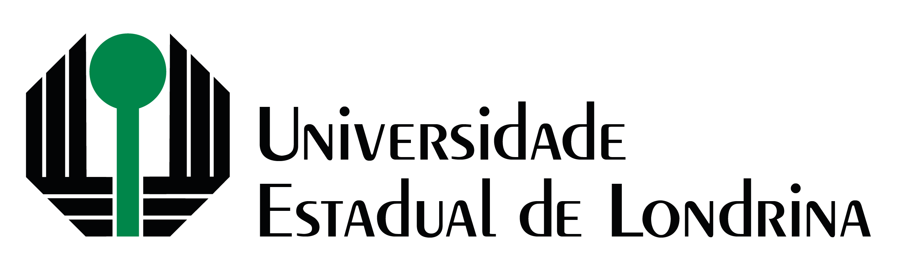

<header class="navbar navbar-expand-md d-flex flex-column h-100 bg-light" >
    <nav class="navbar navbar-expand-lg navbar-light">
        <a class="navbar-brand" href="index.html">
            
        </a>
        <button class="navbar-toggler" type="button" data-toggle="collapse" data-target="#navbarSupportedContent" aria-controls="navbarSupportedContent" aria-expanded="false" aria-label="Toggle navigation">
          <span class="navbar-toggler-icon"></span>
        </button>		  
        <div class="collapse navbar-collapse" id="navbarSupportedContent">
          <ul class="navbar-nav mr-auto">
            <li class="nav-item dropdown">
              <a class="nav-link dropdown-toggle" href="#" id="navbarDropdown1" role="button" data-toggle="dropdown" aria-haspopup="true" aria-expanded="false">
                Programação
              </a>
              <div class="dropdown-menu" aria-labelledby="navbarDropdown1">
                <a class="dropdown-item" href="/eventos_passados/33_semat/program/programacao/programacao_completa.html">Programação Completa</a>
                <a class="dropdown-item" href="/eventos_passados/33_semat/program/programacao/abertura.html">Abertura</a>
                <a class="dropdown-item" href="/eventos_passados/33_semat/program/programacao/palestras.html">Palestras</a>
                <a class="dropdown-item" href="/eventos_passados/33_semat/program/programacao/oficinas.html">Oficinas</a>
                <a class="dropdown-item" href="/eventos_passados/33_semat/program/programacao/mesa_redonda.html">Mesa Redonda</a>
              </div>
            </li>
            <li class="nav-item dropdown">
                <a class="nav-link dropdown-toggle" href="#" id="navbarDropdown2" role="button" data-toggle="dropdown" aria-haspopup="true" aria-expanded="false">
                    Orientações Trabalhos
                </a>
                <div class="dropdown-menu" aria-labelledby="navbarDropdown2">
                  <a class="dropdown-item" href="/eventos_passados/33_semat/program/orientacao_geral.html">Orientações Gerais</a>
                  <a class="dropdown-item" href="/eventos_passados/33_semat/program/comunic_oral.html">Comunicações Orais</a>
                  <a class="dropdown-item" href="/eventos_passados/33_semat/program/posteres.html">Sessão de Pôsteres</a>
                </div>
            </li>
            <li class="nav-item dropdown">
              <li class="nav-item">
                <a class="nav-link" href="/eventos_passados/33_semat/program/comissoes.html">
                  Comissões
                </a>
            </li>
            </li>
            <li class="nav-item">
              <a class="nav-link" href="/eventos_passados/33_semat/program/inscricoes.html">
                  Inscrições
              </a>
            </li>
            <li class="nav-item">
                <a class="nav-link" href="/eventos_passados/33_semat/program/anais.html">
                    ANAIS
                </a>
            </li>
            <li class="nav-item">
              <a class="nav-link" href="../../../../../index.html">
                  Voltar
              </a>
          </li>
          </ul>
        </div>
        <a class="navbar-brand" href="#">
            
        </a>
    </nav>
</header>